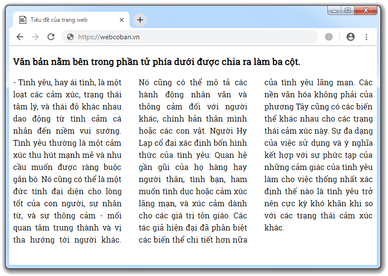

Chia văn bản bên trong phần tử ra thành nhiều cột
- Trong bài học này, tôi sẽ hướng dẫn các bạn cách sử dụng nhóm thuộc tính column để chia văn bản bên trong một phần tử ra thành nhiều cột.

- Dưới dây là danh sách các thuộc tính thuộc nhóm column
(các bạn vui lòng bấm vào hình để tìm hiểu chi tiết chức năng & cách sử dụng của từng thuộc tính)
| column-count |
- Thuộc tính này dùng để xác định "số lượng cột" mà các bạn muốn văn bản bên trong phần tử được chia thành. |
| column-gap |
- Thuộc tính này dùng để thiết lập "khoảng cách" nằm giữa hai cột văn bản. .ttt-column-gap |
| column-rule-style |
- Thuộc tính này dùng để xác định "kiểu" của cái đường kẻ nằm ngăn cách giữa mỗi hai cột văn bản. .ttt-column-rule-style |
| column-rule-width |
- Thuộc tính này dùng để thiết lập "độ dày" của cái đường kẻ nằm ngăn cách giữa mỗi hai cột văn bản. .ttt-column-rule-width |
| column-rule-color |
- Thuộc tính này dùng để thiết lập "màu sắc" của cái đường kẻ nằm ngăn cách giữa mỗi hai cột văn bản. |
| column-rule |
- Thuộc tính này là cú pháp tổng quát dùng để thiết lập cái đường kẻ nằm ngăn cách giữa mỗi hai cột văn bản (thay vì phải sử dụng kết hợp ba thuộc tính column-rule-width, column-rule-style, column-rule-color được nêu ở phía trên thì bây giờ chúng ta chỉ cần dùng duy nhất mỗi thuộc tính này là đủ) .ttt-column-rule |
| column-fill |
- Thuộc tính này dùng để tùy chỉnh cách thức phân chia văn bản ra các cột. .ttt-column-fill |
| column-width |
- Thuộc tính này dùng để thiết lập chiều rộng của mỗi cột văn bản. .ttt-column-width |
- Thuộc tính column-gap dùng để thiết lập "khoảng cách" nằm giữa mỗi hai cột văn bản.
- Cú pháp:
- Trong đó, value có thể được xác định dựa theo một trong bốn loại giá trị:
| normal | - Khoảng cách nằm giữa mỗi hai cột văn bản là 1em. |
Xem ví dụ |
| length | - Chỉ định một khoảng cách cụ thể nằm giữa mỗi hai cột văn bản (ví dụ: 15px, 2em, 27px, . . . .) |
|
| initial | - Sử dụng giá trị mặc định của nó. (mặc định thì thuộc tính column-gap có giá trị là normal) |
|
| inherit | - Kế thừa giá trị thuộc tính column-gap từ phần tử cha của nó. |
- Thuộc tính column-rule-style dùng để xác định "kiểu" của cái đường kẻ nằm ngăn cách giữa mỗi hai cột văn bản.
- Cú pháp:
- Trong đó, value có thể được xác định dựa theo một trong năm loại giá trị:
| none | - Không thiết lập cái đường kẻ nằm ngăn cách giữa mỗi hai cột văn bản. |
Xem ví dụ |
| solid | . . . . . . . . . . . . . . . . . . . . . . . . . . . . . . . . . . . . . . . . . . . . . . . . . . . . . . . . . . . . . . . . . . . . . . . . . . . . . . . . . . . . . . . . . . . . . . . . . . . . . . . . . . . . . . . . . . . . . . . . . . . . . . . . . . . . . . . . . . . . . . . . . . . . . . . . . . . . . . . . . . . . . . . . . . . . . . . . . . . . . . . . . . . . . . . . . . . . . . . . . . . . . . . . . . . . . . . . . . . . . . . . . . . . . . . . . . . . . . . . . . . . . . . . . . . . . . . . . . . . . . . . . . . . . . . . . . . |
|
| dotted | . . . . . . . . . . . . . . . . . . . . . . . . . . . . . . . . . . . . . . . . . . . . . . . . . . . . . . . . . . . . . . . . . . . . . . . . . . . . . . . . . . . . . . . . . . . . . . . . . . . . . . . . . . . . . . . . . . . . . . . . . . . . . . . . . . . . . . . . . . . . . . . . . . . . . . . . . . . . . . . . . . . . . . . . . . . . . . . . . . . . . . . . . . . . . . . . . . . . . . . . . . . . . . . . . . . . . . . . . . . . . . . . . . . . . . . . . . . . . . . . . . . . . . . . . . . . . . . . . . . . . . . . . . . . . . . . . . . |
|
| dashed | . . . . . . . . . . . . . . . . . . . . . . . . . . . . . . . . . . . . . . . . . . . . . . . . . . . . . . . . . . . . . . . . . . . . . . . . . . . . . . . . . . . . . . . . . . . . . . . . . . . . . . . . . . . . . . . . . . . . . . . . . . . . . . . . . . . . . . . . . . . . . . . . . . . . . . . . . . . . . . . . . . . . . . . . . . . . . . . . . . . . . . . . . . . . . . . . . . . . . . . . . . . . . . . . . . . . . . . . . . . . . . . . . . . . . . . . . . . . . . . . . . . . . . . . . . . . . . . . . . . . . . . . . . . . . . . . . . . |
|
| double | . . . . . . . . . . . . . . . . . . . . . . . . . . . . . . . . . . . . . . . . . . . . . . . . . . . . . . . . . . . . . . . . . . . . . . . . . . . . . . . . . . . . . . . . . . . . . . . . . . . . . . . . . . . . . . . . . . . . . . . . . . . . . . . . . . . . . . . . . . . . . . . . . . . . . . . . . . . . . . . . . . . . . . . . . . . . . . . . . . . . . . . . . . . . . . . . . . . . . . . . . . . . . . . . . . . . . . . . . . . . . . . . . . . . . . . . . . . . . . . . . . . . . . . . . . . . . . . . . . . . . . . . . . . . . . . . . . . |
|
| initial | - Sử dụng giá trị mặc định của nó. (mặc định thì thuộc tính column-rule-style có giá trị là none) |
|
| inherit | - Kế thừa giá trị thuộc tính column-rule-style từ phần tử cha của nó. |
- Thuộc tính column-rule-width dùng để thiết lập "độ dày" của cái đường kẻ nằm ngăn cách giữa mỗi hai cột văn bản.
- Cú pháp:
- Trong đó, value có thể được xác định dựa theo một trong sáu loại giá trị:
| thin | - Đường kẻ có độ dày tương đương với 1px. |
Xem ví dụ |
| medium | - Đường kẻ có độ dày tương đương với 3px. |
|
| thick | - Đường kẻ có độ dày tương đương với 5px. |
|
| length | - Chỉ định độ dày cụ thể của cái đường kẻ (ví dụ: 7px, 10px, 15px, . . . .) |
|
| initial | - Sử dụng giá trị mặc định của nó. (mặc định thì thuộc tính column-rule-width có giá trị là medium) |
|
| inherit | - Kế thừa giá trị thuộc tính column-rule-width từ phần tử cha của nó. |
- Thuộc tính column-rule là cú pháp tổng quát dùng để thiết lập cái đường kẻ nằm ngăn cách giữa mỗi hai cột văn bản.
- Cú pháp:
- Trong đó, width style color lần lượt là giá trị của ba thuộc tính column-rule-width column-rule-style column-rule-color
- Tuy nhiên, thuộc tính column-rule không bắt buộc chúng ta phải gán cho nó đủ ba giá trị, giá trị của thuộc tính nào còn thiếu thì trình duyệt sẽ tự động sử dụng giá trị mặc định của thuộc tính đó.
- Thuộc tính column-fill dùng để tùy chỉnh cách thức phân chia văn bản ra các cột.
- Cú pháp:
- Trong đó, value có thể được xác định dựa theo một trong bốn loại giá trị:
| balance | - Trình duyệt sẽ "cố gắng" chia đều văn bản ra các cột để giúp cho các cột có độ cao bằng nhau. |
Xem ví dụ |
| auto | - Trình duyệt sẽ chia văn bản ra các cột theo thứ tự từ trái sang phải, khi cột này được lấp đầy văn bản rồi mới đến cột khác. |
|
| initial | - Sử dụng giá trị mặc định của nó. (mặc định thì thuộc tính column-fill có giá trị là balance) |
|
| inherit | - Kế thừa giá trị thuộc tính column-fill từ phần tử cha của nó. |
- Thuộc tính column-width dùng để thiết lập chiều rộng của mỗi cột văn bản.
- Lưu ý: Khi chúng ta sử dụng thuộc tính column-width để thiết lập chiều rộng của mỗi cột văn bản thì trình duyệt sẽ xem xét và xử lý dựa theo hai trường hợp.
1) Trường hợp thứ nhất
- Nếu chúng ta KHÔNG sử dụng thuộc tính column-count để xác định "số lượng cột" thì trình duyệt sẽ dựa vào chiều rộng của phần tử để chia văn bản ra thành các cột (sao cho số lượng cột nhiều nhất có thể & chiều rộng của mỗi cột không được phép nhỏ hơn chiều rộng được thiết lập bởi thuộc tính column-width)
2) Trường hợp thứ hai
- Nếu chúng ta CÓ sử dụng thuộc tính column-count để xác định "số lượng cột" thì trình duyệt sẽ chia văn bản bên trong phần tử ra số cột tương ứng (với điều kiện là chiều rộng của mỗi cột không được phép nhỏ hơn chiều rộng được thiết lập bởi thuộc tính column-width, nếu không thì số lượng cột sẽ bị giảm lại)